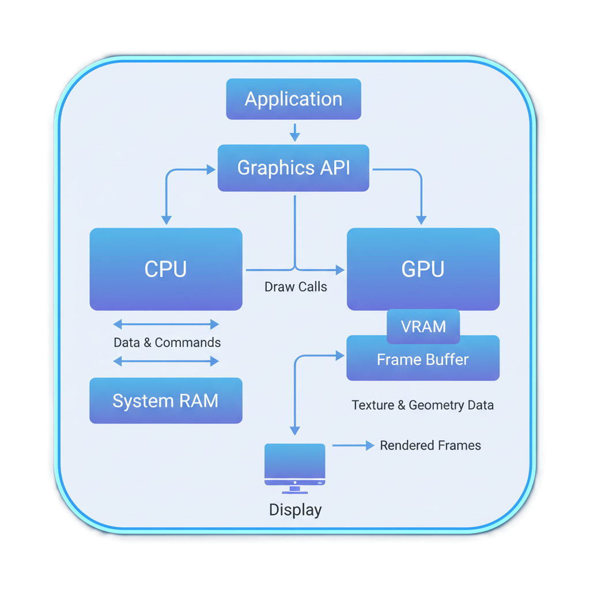
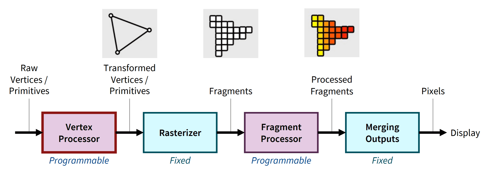
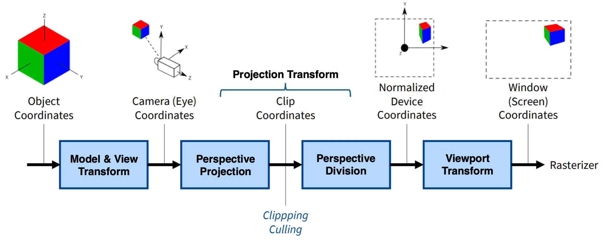
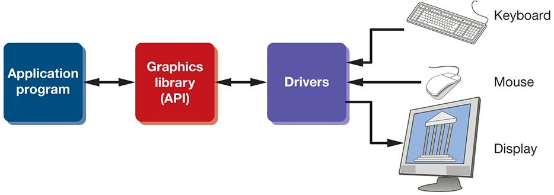
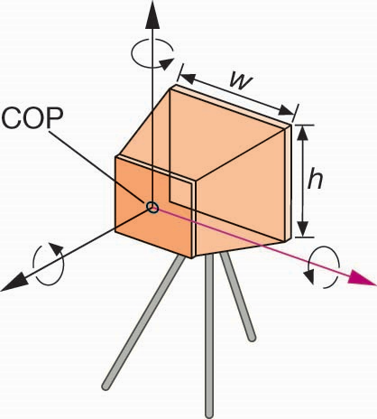

CPU、图形 API、GPU 与绘制流水线：从模型数据到屏幕像素

我们已经知道一幅图像来自对象 + 相机 + 光 / 材质。
现在的问题是：这些描述怎样真正变成屏幕像素？
解释 CPU、Graphics API 与 GPU 的角色。
描述顶点、图元、片元到像素的核心步骤。
用同一个多模型场景观察每个阶段的输入与输出。
const points = new Float32Array([
-0.5, -0.5, 0.0,
0.5, -0.5, 0.0,
0.0, 0.5, 0.0
]);三个顶点只描述几何位置。
大量离散位置上的像素颜色
从“顶点数组”到“屏幕像素”，你认为至少需要经过哪三步？先写关键词，不求准确。
整个图形体系结构，就是为了高效地传递数据和定义对数据的操作。
1920 × 1080 像素 / 帧
约 1.24 亿像素 / 秒 @ 60 FPS
变换、插值、纹理、光照、深度、混合……
大量元素执行相似计算 → 高吞吐并行处理 → GPU
这个 Demo 用一个包含立方体、棱锥和三角面板的场景，连续观察每个阶段的输入与输出。
下面的概念讲解与 Demo 观察一一对应：先看结果，再解释为什么。

同一种处理要作用于海量顶点和片元，因此流水线 + 并行能够提高吞吐量。
Vertex Shader、Fragment Shader 是本课程最直接控制的核心阶段。
组装、光栅化、深度测试、混合等主要由硬件与管线状态高效执行。
旋转相机后，模型的世界坐标是否改变？如果没有，为什么画面看起来发生了变化？
区分 Model 矩阵改变的是对象姿态，View 矩阵改变的是观察方式。

每个坐标变换都可以表示成矩阵运算。
在 Demo 的 Model / View / Projection 阶段中，同一个顶点的数值在哪一步开始因为“相机”而改变？这个改变说明了什么？
顶点位置以及随顶点携带的属性。
例如：颜色、法向量、纹理坐标。
gl_Position = projection
* view
* model
* position;最终必须产生用于后续裁剪和光栅化的位置。
一个三角形跨越窗口边界时，是整个三角形被删除，还是只保留可见部分？这一步为什么不能等到最后像素阶段再做？
理解图元装配、裁剪、透视除法、视口变换共同完成“可见范围到屏幕范围”的转换。
调窄裁剪窗口时，跨越边界的三角形是整体消失，还是被截出新的可见部分？这一步的输出仍然是三角形吗？
三个顶点 → 三个点
顶点按规则组成线段
三个顶点 → 一个三角形
同一组顶点数据，可以因为图元类型不同而产生不同几何。
片元着色器算出的颜色是否一定进入屏幕？如果两个模型投影到同一个位置，最终由什么决定谁可见？
建立关键区分：Fragment 是候选结果，Pixel 是最终写入帧缓存的结果。
切换到深度测试阶段并降低已有深度值：片元着色器已经算出的颜色为什么可能没有写入帧缓冲？
几何图元
例如屏幕空间中的一个三角形。
Fragments
哪些采样位置被图元覆盖？各属性在这些位置是多少？
A 红色、B 绿色、C 蓝色；或者三个顶点各自具有纹理坐标、深度等。
三角形内部每个片元获得连续变化的属性值，交给片元着色器继续处理。
outColor = texture(tex, uv)
* lighting;最常见的输出是颜色，但现代 API 可以写入多个渲染目标。

点
线段
多边形基础
最终常被离散为简单图元处理
GPU 最喜欢规则、简单、数量巨大的数据；三角形因此成为实时图形最重要的基本图元。
glBegin(GL_TRIANGLES);
glVertex3f(0.0f, 0.0f, 0.0f);
glVertex3f(0.0f, 1.0f, 0.0f);
glVertex3f(0.0f, 0.0f, 1.0f);
glEnd();概念直观，但已不是现代 OpenGL / WebGL 的主流组织方式。
const points = new Float32Array([
0.0, 0.0, 0.0,
0.0, 1.0, 0.0,
0.0, 0.0, 1.0
]);
// 上传到 GPU buffer批量存储数据，再用 draw call 告诉 GPU 如何解释与绘制。

于是“相机”最终也变成 GPU 可执行的矩阵与参数。
WebGPU 当前由 W3C 推进；本课程仍以 WebGL 2 作为掌握经典图形学原理的主要实验工具。
顶点、纹理、缓冲
变换、观察、投影
顶点 → 图元 → 片元
大量元素执行相似计算
CPU 组织任务，API 提供接口，GPU 高并行执行。
顶点变换、投影、图元组装与裁剪。
光栅化产生片元，着色、测试后写入帧缓冲。
用同一场景观察每个阶段的输入与输出。
从下一章开始：真正让第一个三角形出现在浏览器里。